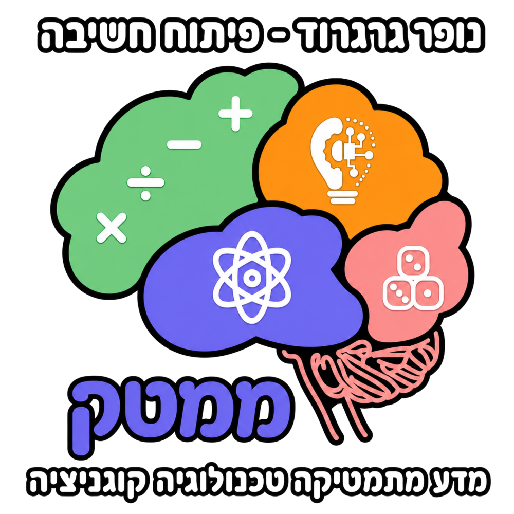
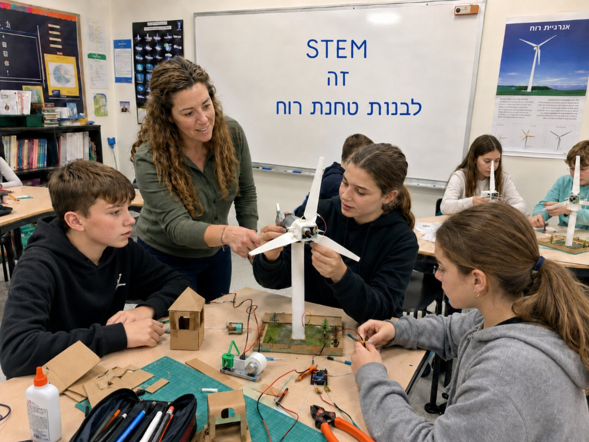
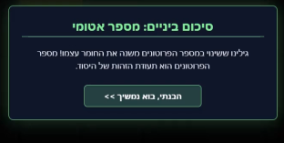
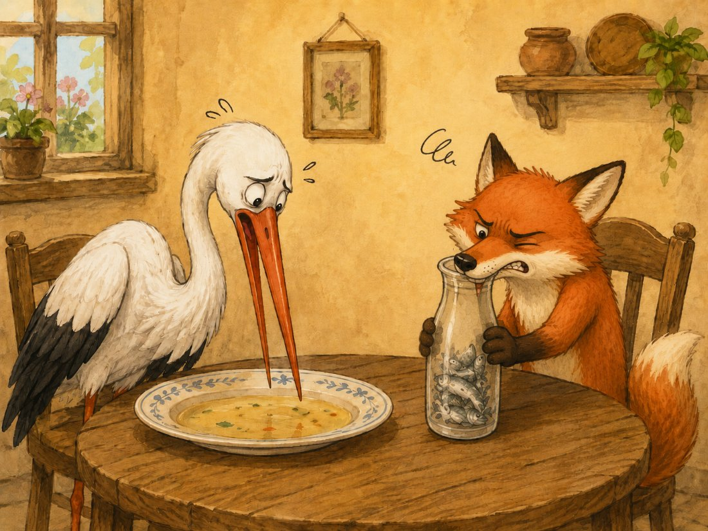
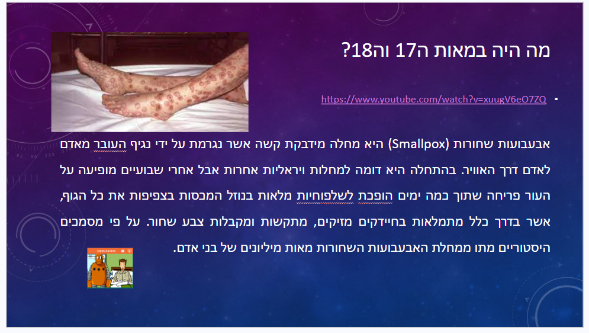
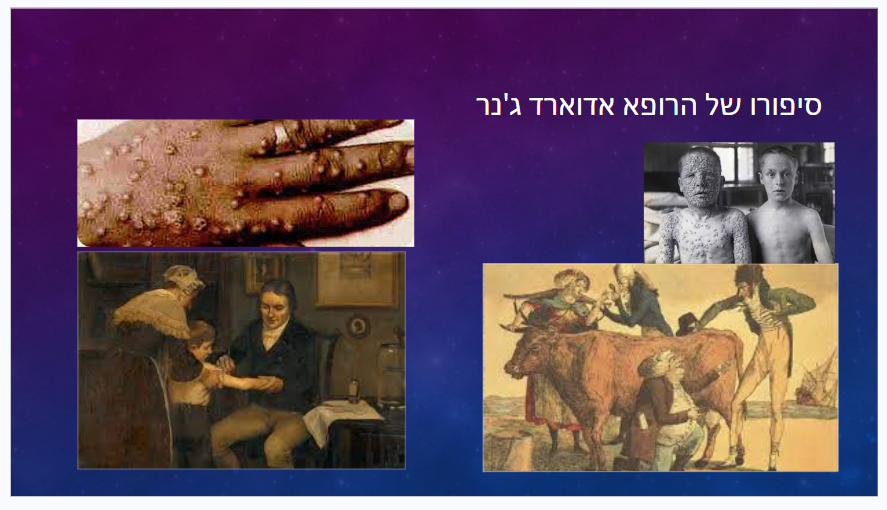
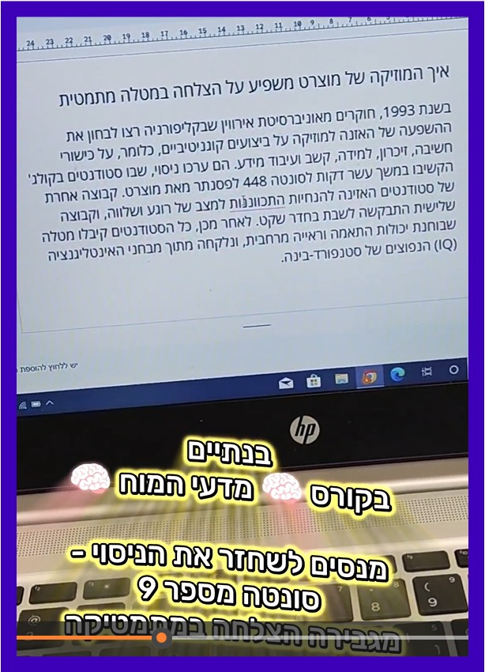
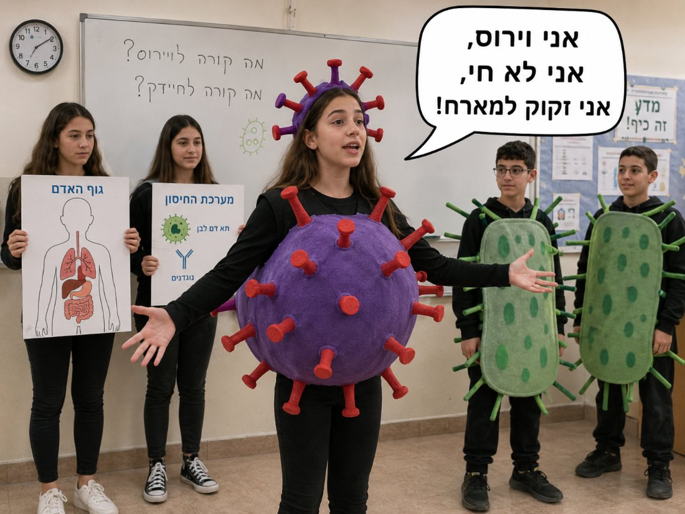
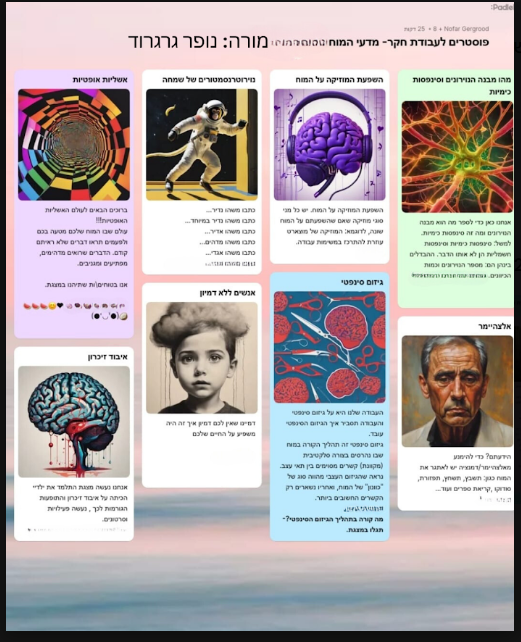
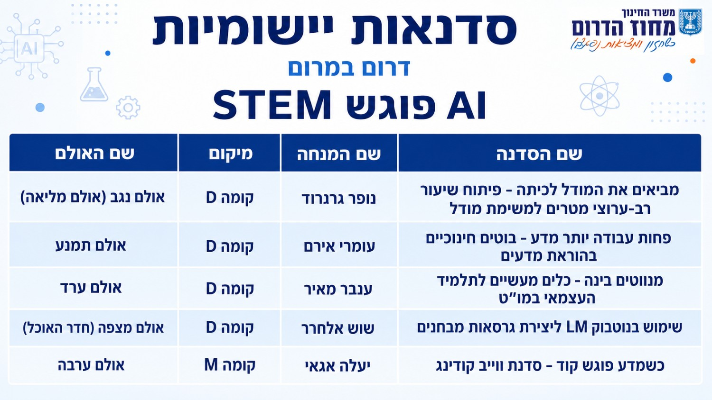

הרצאה לרכזי ומורי מדע וטכנולוגיה


נשים את STEM בצד לרגע.
גישה יזומה: מזהים צרכים מראש, מונעים קשיים לפני שהם נוצרים, והתלמידים בונים ידע כשותפים פעילים.
ששת הנדבכים - איך עושים את זה בפועל:
זו למידה שמאפשרת לנו להגיע לחשיבה מסדר גבוה.
בחדר הבריחה "מבנה האטום" כל חדר נשען על הקודם, החידות דורשות הבנה ולא שינון, והתלמידים מרכיבים אטומים בעצמם. הם לא קיבלו את הידע - הם בנו אותו. כך בונים על ידע קיים, צעד אחר צעד.

תלמידים שקיבלו ממני עבודה כשיפור ציון מבחן.

פתיחת השיעור על מערכת החיסון: מה היה בעולם לפני שהיו חיסונים - ורק אז נכנסנו לחומר.


בוט לפונקציה קווית וריבועית מלווה את התלמידים שלב-שלב. הם עובדים איתו בבית, בקצב שלהם.
בקורס מדעי המוח התלמידים משחזרים בעצמם את ניסוי "אפקט מוצרט" - סונטה מס' 9 והשפעתה על ביצועים במתמטיקה.

בהצגה התלמידים גילמו "מה עובר על וירוס כשהוא חודר אלינו, ומה קורה לחיידק" - והניעו את התהליך בגוף שלהם.

בעבודת חקר במדעי המוח כל תלמיד צלל לנושא אחר ושילב ביולוגיה, כימיה, פיזיקה, מתמטיקה וטכנולוגיה - אלו הנושאים שחקרו:

בונים ידע, סביב בעיה, מחוברת לעולם, מתוך עשייה.
שורה אחר שורה - אותו רעיון. כל דוגמה בהוראה הפרואקטיבית היא בעצם דוגמה ל-STEM.
עולם שמתגמל חשיבה, פתרון בעיות והסתגלות - לא שליפת עובדות. STEM אינו תוספת ללו"ז, אלא ההכנה הרלוונטית לעולם הזה.
עולם שמתגמל חשיבה, פתרון בעיות והסתגלות - לא שליפת עובדות. STEM אינו תוספת ללו"ז, אלא ההכנה הרלוונטית לעולם הזה.
כל מה שראינו היום, מזוקק לארבעה צעדים פשוטים לקידום למידת STEM - ואתן כבר יודעות לעשות את זה.
"תמיד הגדרתי את עצמי כמורת STEM"
מלווה אנשי חינוך לפיתוח כלי למידה והוראה משמעותית ויצירתית באמצעים טכנולוגיים.
"תמיד הגדרתי את עצמי כמורת STEM"
מלווה אנשי חינוך לפיתוח כלי למידה והוראה משמעותית ויצירתית באמצעים טכנולוגיים.
